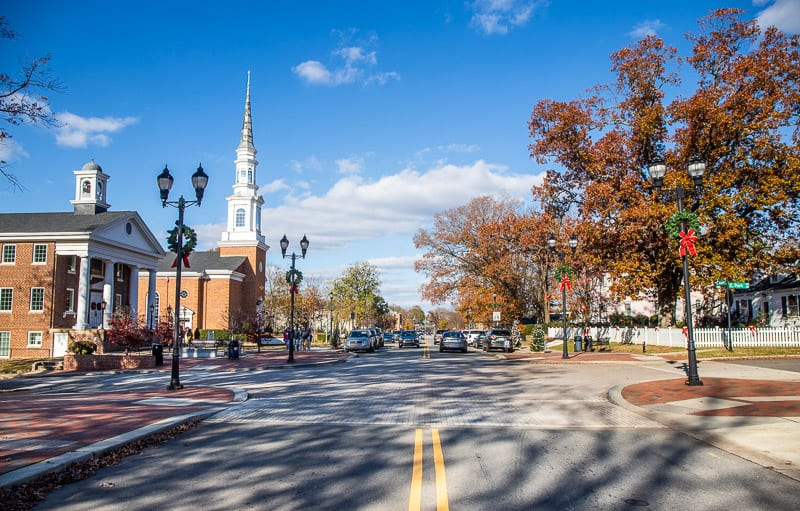

Explore the town of Cary in North Carolina.
Cary, North Carolina, is a vibrant and rapidly growing town nestled in the heart of the Research Triangle region. Known for its exceptional quality of life, Cary offers a perfect blend of suburban tranquility and urban amenities. With a population of over 170,000 residents, Cary is celebrated for its top-rated schools, diverse neighborhoods, and strong sense of community.
Cary is home to numerous parks, greenways, and recreational facilities, providing ample opportunities for outdoor activities and family-friendly outings. The town boasts a thriving arts and culture scene, with theaters, galleries, and music venues showcasing local talent. Additionally, Cary hosts several annual festivals and events that bring the community together in celebration. Its strategic location, just minutes away from the bustling cities of Raleigh and Durham, ensures easy access to major universities, renowned healthcare facilities, and a wide range of employment opportunities. Cary's commitment to sustainability, innovation, and excellence makes it an exceptional place to live, work, and raise a family.